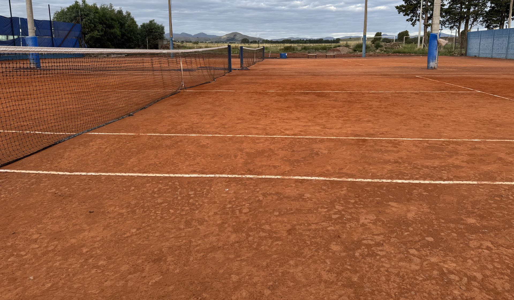

Todo el tenis del club, en un solo lugar.
Ranking en vivo, cartelera, turnos de cancha y un pronóstico pensado para saber si está lindo para jugar.

¿Está lindo para el tenis?
Pronóstico de los próximos días con un puntaje de estrellas pensado para jugar: poco viento, sin lluvia y con sol son 5 estrellas.
Cargando el pronóstico…